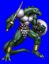
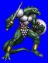
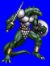
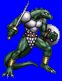

Height: 120-250 cm Weight: 350-750 lbs.
Habitat: Shore, dungeon Origin: America
Meaning: English "lizardman"
An amphibious, bipedal lizard that inhabits shores and caves. It is typically encountered wearing strong iron armor to increase its defensive ability. Although its defenses may appear impenetrable, fatal damage to its brain or heart will render it helpless. In addition to its superbly crafted weapons, the lizardman dispatches its victims using its poison-tipped tail. Lizardmen first appeared in American fiction.